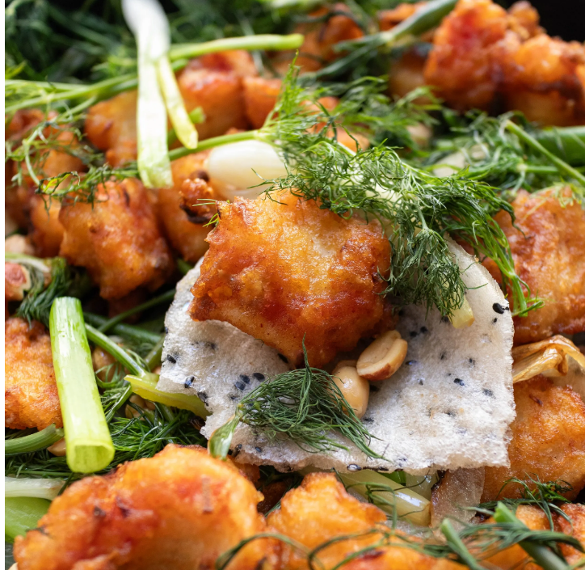

Hanoi Fried Fish with Turmeric and Dill (Chả Cá Lã Vọng)
Home

The main toppings of the dish--dill and green onions--bring out the perfect flavors in the fried fish.
Chả Cá Lã Vọng, also known as Chả Cá Hà Nội and Chả Cá Thăng Long, is Hanoi’s famous fried fish with turmeric and dill.
The fried fish comes with rice noodles, peanuts, fresh dill, toasted sesame crackers, and a pungent fermented shrimp dipping sauce.
The dish is served deconstructively so it’s best enjoyed with a group of people for a more entertaining do-it-yourself experience.
To avoid confusion, it’s best to use the full name of the dish, Chả Cá Lã Vọng, rather than just saying Chả Cá.
While Chả means paste and Cá means fish, this dish is not made with fish paste, but rather chunks of fish.
Ingredients
- 1 1/2 lbs white fish fillets
- 1/2 teaspoon sea salt
- 1 teaspoon fish sauce
- 1 teaspoon granulated sugar
- 1 teaspoon turmeric powder
- 1 teaspoon grated galangal or ginger
- 2 cloves grated garlic
- 2 tablespoon minced shallots
- Vegetable oil plus more for deep frying
- 1/2 cup corn starch
- 1 bunch fresh dill
- 4 green onions (cut into 2 inch segments)
- 1 small yellow onion (peel and cut into wedges)
- Medium rice noodles (cook per package instructions)
- Roasted salted peanuts
- Rice paper
- Rice crackers
- Mắm Tôm dipping sauce
Steps
- Prepare the fish: Cut the fillets into 1½ inch pieces and marinate them with salt, fish sauce, sugar, turmeric powder,
galangal, garlic, and shallots. Set aside.
- Deep fry: Fill a skillet with 1 inch oil and heat on medium-high. Coat the fillets with corn starch, dust off any excess,
and deep fry them until golden brown (about 5 minutes). Remove the fried fillets from the oil and transfer them to a plate lined with paper
towels or a wired rack to absorb excess oil.
- Prepare aromatics: Prepare a pan or cast iron skillet with a bit of vegetable oil on the bottom. Add onions and pan fry
until lightly browned. Add dill and green onions. Cook for about one minute or until lightly wilted.
- Serve: Add fried fish and garnish with chopped peanuts. Serve with rice noodles, sesame rice crackers, rice paper,
and dipping sauce.